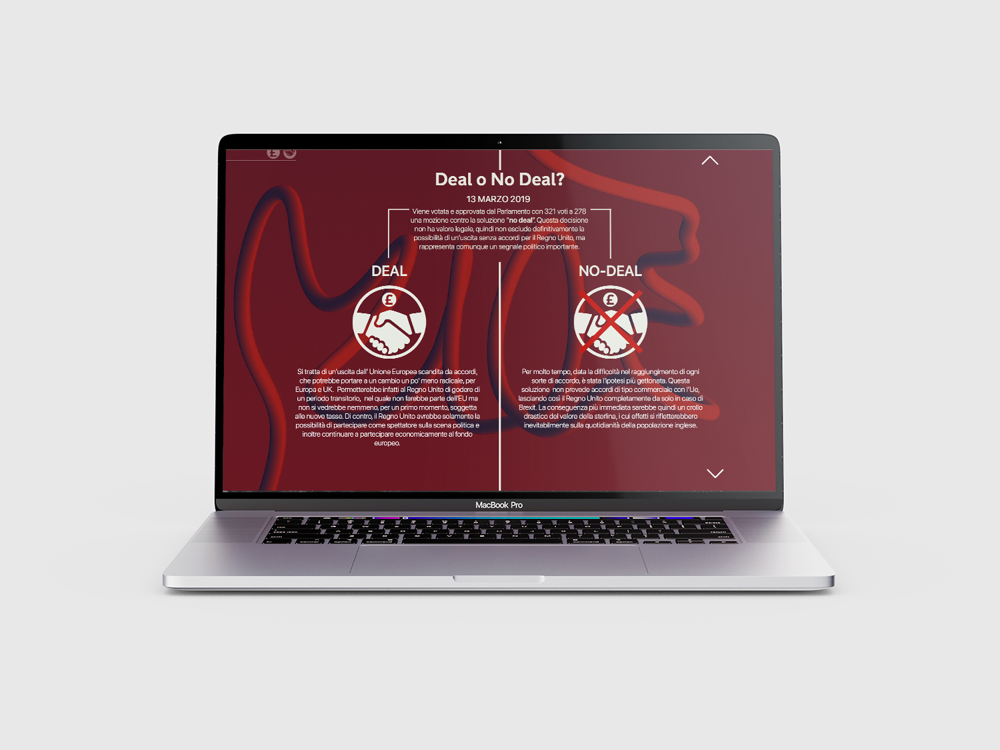
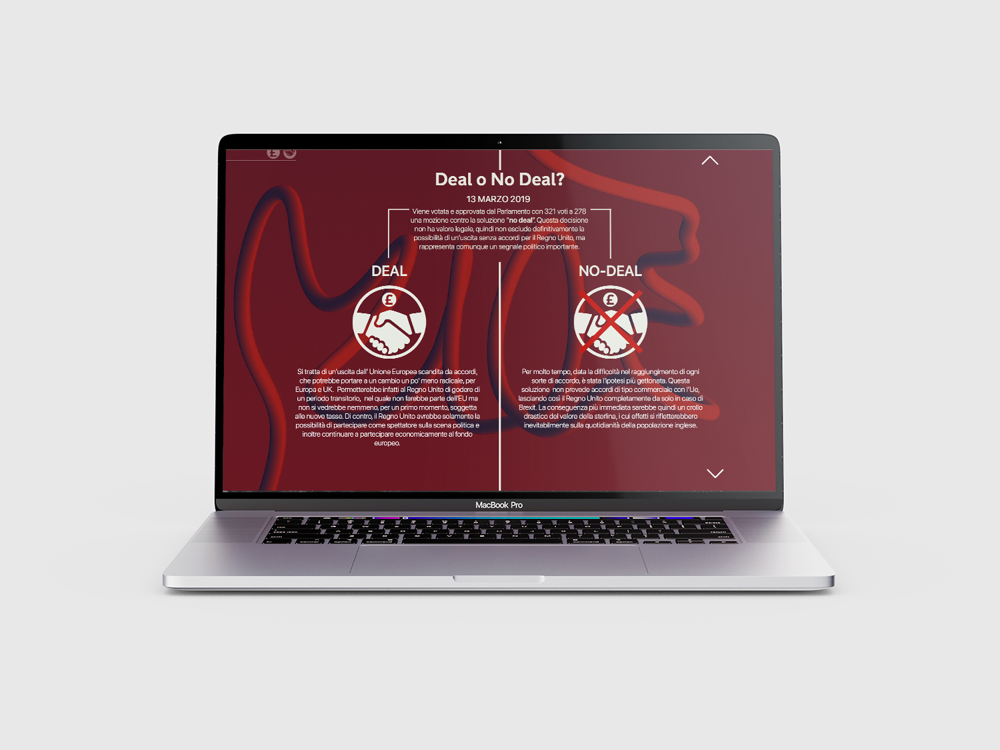
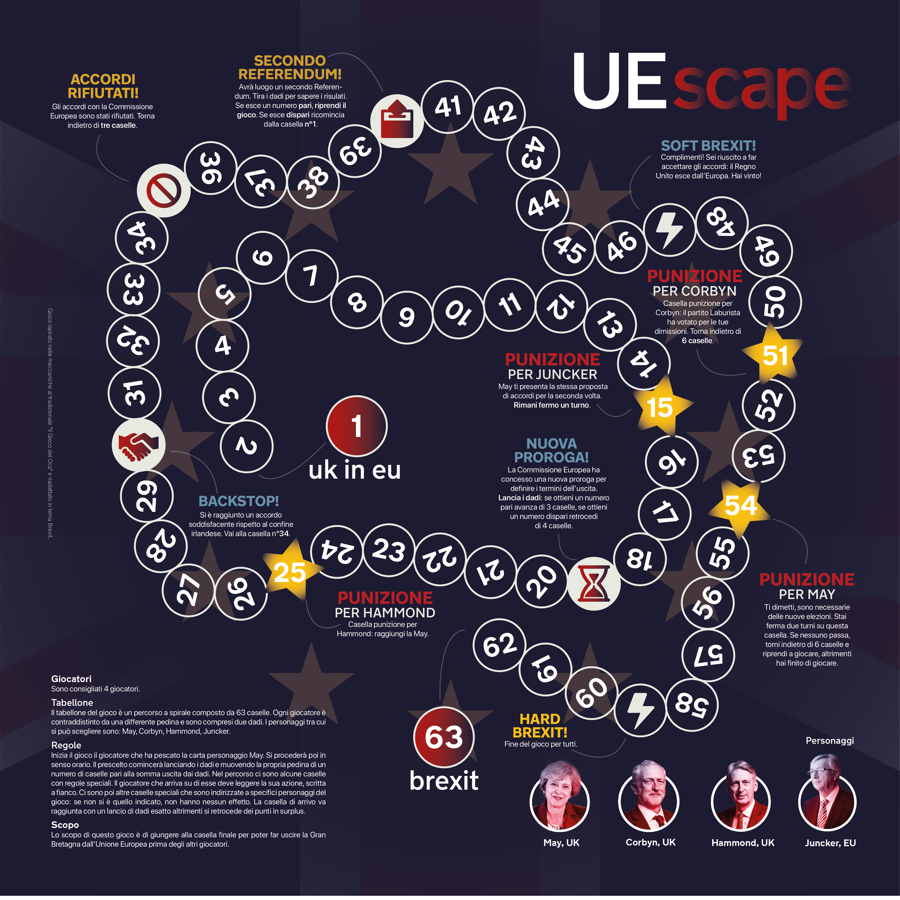
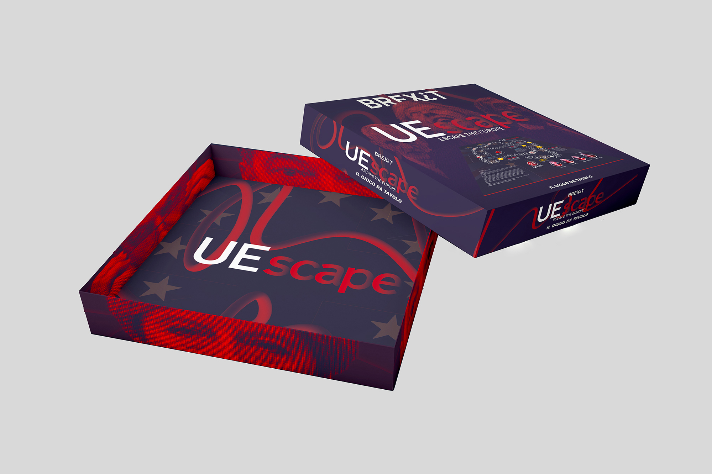
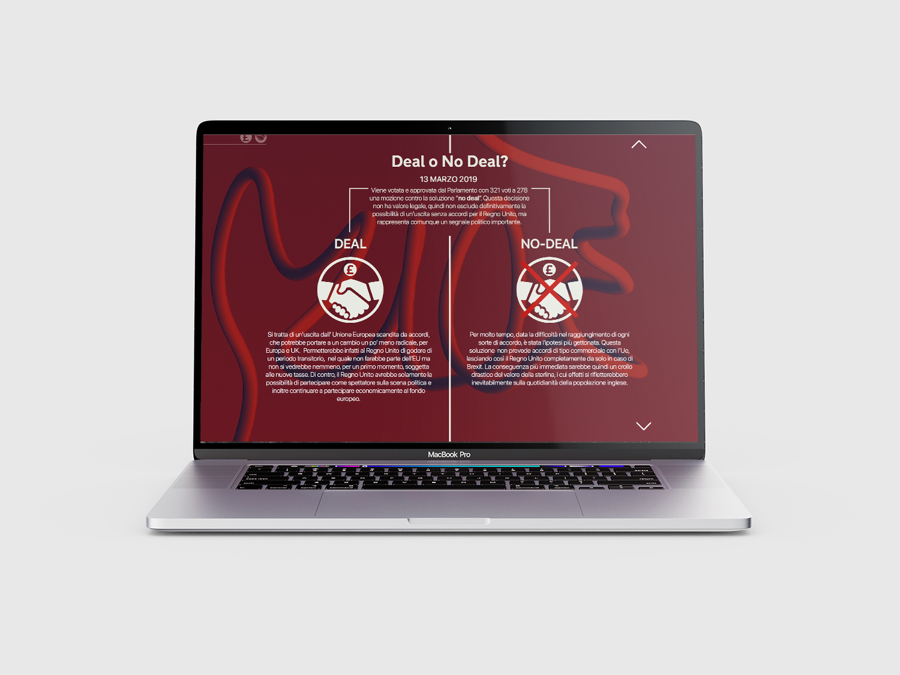
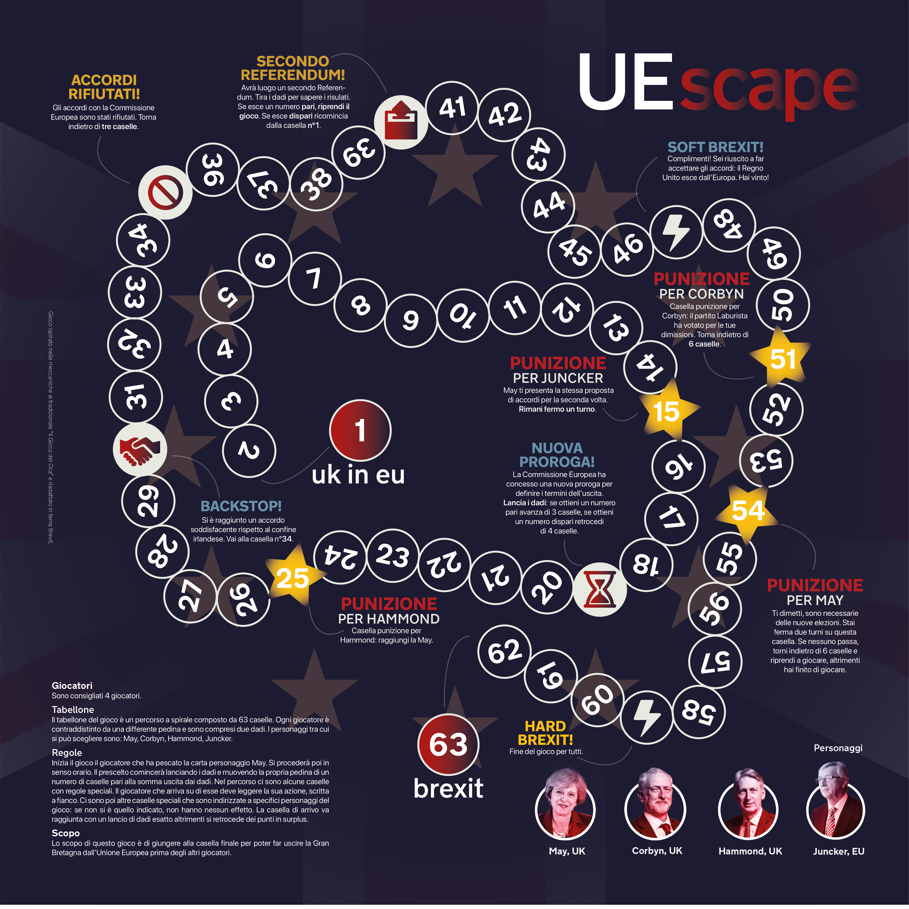
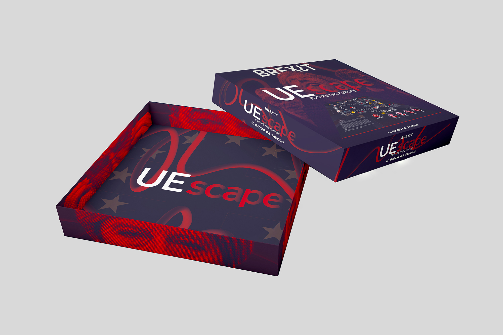

Booklet containing the analysis of the news Brexit
 

Pages from the site
 Boardgame EUscape
Booklet containing the analysis of the news Brexit

Pages from the site
 Boardgame EUscape
Brex¿t
For this project we studied the narration and the perception of the Brexit phenomenon through both a quantitative and qualitative data analysis.
From the results of the analysis we noticed that most people could keep up with the daily changes of Brexit so we decided to create a website to collect all the facts in one place, giving them an organized and clear structure.
We also translated the news in a boardgame, EUescape, based on the main characters of the negotiations and the continuous push and pull that characterized the situation.
The project was awarded the Premio Design per l’Informazione Giornalistica during the XI edizione del Premio Nostalgia del Futuro.
Corso di Sociologia dei Processi Culturali
e Comunicativi
Prof. M. Ciastellardi
A.A. 2018/2019
Project by:
Marta Sironi, Matilde Balestri, Sara Davì, Matteo Balestrini, Carlotta Bacchini, Pietro Forino